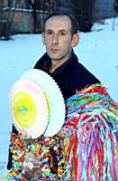

Žejane – During the Halloween, of all the posts in Liburnia, some have special significance. Those on which the scarecrow is hanging. Regardless of whom the scarecrow is; Trolej, Rivijera, hunchback or millionaire... somebody has to make it, dress it, and paint it.
 - This is already the tenth year that I am making the scarecrow all by my self and before we use to make it in a group, said Luciano Doričić member of the folklore society of bell ringers from Žejane and were mother and father of this Žejane millionaire, which was on the day of Three Kings hung in the center of Žejane.
Explain the technique of building the scarecrow?
- You take an overall which you fill up not with the straw but with the second cut grass to make it fluffy. The scarecrow must be flexible and light. It is supported by the interior wire mash and the shoes and gloves are wired in. At the end you place the mask which we buy at the end of the carnival for the next year. Since we hang the scarecrow on January 6th the masks are normally not yet available.
Where do you get the costume? Do you make a fancy scarecrow or this year is an exception because it is a millionaire?
- We decide a while back that the scarecrow must be a bit better dressed and then our women folk take over. However, you have to say that its name is given only after it is finished.
When and how?
- The scarecrow is normally completed in the morning of the Three Kings day. Takes about three hours and then the group decides on the name. It is always connected to a fact. Last year it was Furman that is because we were not able to drive it through town with the horse driven carriage because the horse was to wild. This year we did use the carriage. In Žejane we actually have five horses.
Scarecrow is displayed for eight weeks. Will the millionaire last that long? Has ever been the case that the scarecrow lost a part or something happened?
- One year the rope got loose and the scarecrow was in the morning sitting under the pole and because it looked more like a sleeping person than a scarecrow did not surprised the people going to work in the morning.
English translation: Pino Golja

"Milijunaš" mora biti dobro obučen
Žejane – Od svih stupova na Liburniji za trajanja karnevala neki posebno dobivaju na značaju. Oni na kojima visi pust. Bilo da se radi o Trolejku, Rivijerku, Gobotu, Milijunašu... netko ga treba izraditi, obući, dotjerati.
– Već deseto leto delan pusta sam, a prej toga smo ga delali va društvu – kaže nam Lučijano Doričić, član Folklornog društva Žejanski Zvončari i "tata i mama" žejanskom "Milijunašu" koji je na blagdan Tri kralja obješen "pod ploč" u centru Žejana.
Objasnite nam malo tehniku izrade pusta?
– Potreban je jedan radni kombinezon koji se napuni, ne sa slamom kako se obično misli, nego s otavom jer je rahlija. Pust naime treba biti gibak i lagan. Drži ga unutrašnja armatura od žice, a povežu se cipele i rukavice. Na kraju se stavi maska koju u pravilu kupujemo na završetku karnevala za slijedeću godinu. Naime, kako u Žejanama vješamo pusta već 6. siječnja znalo se dogoditi da još nema maski po prodavaonicama.
Otkuda garderoba? Da li se svake godine pust tako dotjera ili je to samo ove godine jer je Milijunaš?
- Već prije nekoliko godina smo se unutar društva dogovorili da pust mora bit "malo boje obučen" i tu onda uskoči ženski dio našeg društva. No, treba reć da mu ime damo tek kad je gotov.
Kad i kako?
– Pusta obično radim na Tri kralja ujutro, za to mi treba nekoliko sati i kad je gotov svi ga u društvu pogledaju i "padne" odluka o imenu. Uvijek je to vezano za neku aktualnost. Lani je primjerice bio Furman i to zato što ga nismo, kako je uobičajno, mogli po selu provozati na vozu jer je konj koji nam je bio na raspolaganju bio nov i jako živ. No sad se pripitomio pa smo se ove godine mogli vratiti tradiciji. Inače, možda je ovo prilika da se kaže da u Žejanama trenutno ima ukupno pet konja.
Pust je dug, osam tjedana. Hoće li Milijunaš izdržat? Naime, je li se kad dogodilo da je pao prije vremena ili da mu je otpao neki dio?
– Samo je jedne godine popustila špaga na kojoj je visio pa je jutro dočekao sjedeći ispod stupa, a budući da je više ličio na usnula čovjeka nego na pusta malo je isprepadao Žejance koji su u jutarnjem polumaku kretali na posao.
D. Juretić Biondić
January 23, 2003
© 2003 Novi List